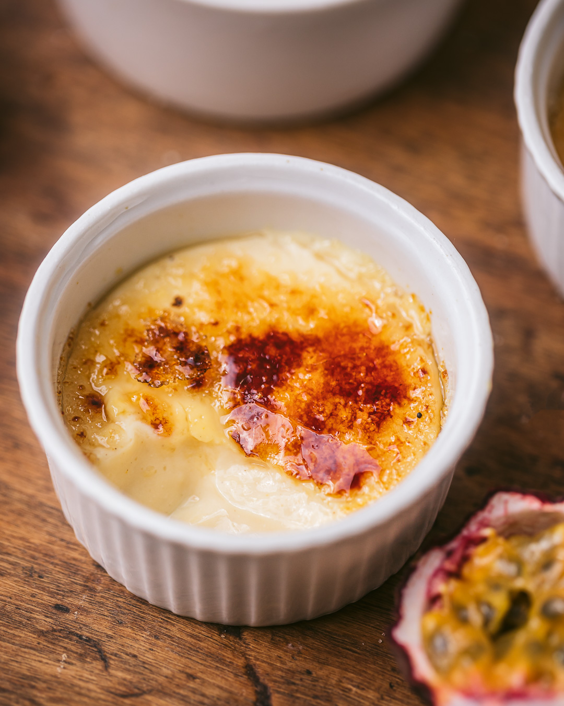

Crème brûlée
Un dessert chic et croquant avec sa couche de sucre caramélisé !
Ingrédients :
- 5 jaunes d’œufs
- 100g de sucre
- 500ml de crème liquide entière
- 1 gousse de vanille ou 1 sachet de sucre vanillé
- Sucre roux pour caraméliser
Préparation :
- Fouette les jaunes d’œufs avec le sucre jusqu’à blanchiment.
- Fais chauffer la crème avec la vanille, puis verse sur le mélange œufs-sucre.
- Verse dans des ramequins et fais cuire 1h au bain-marie à 150°C.
- Laisse refroidir, puis saupoudre de sucre roux et caramélise au chalumeau.
← Retour à l'accueil